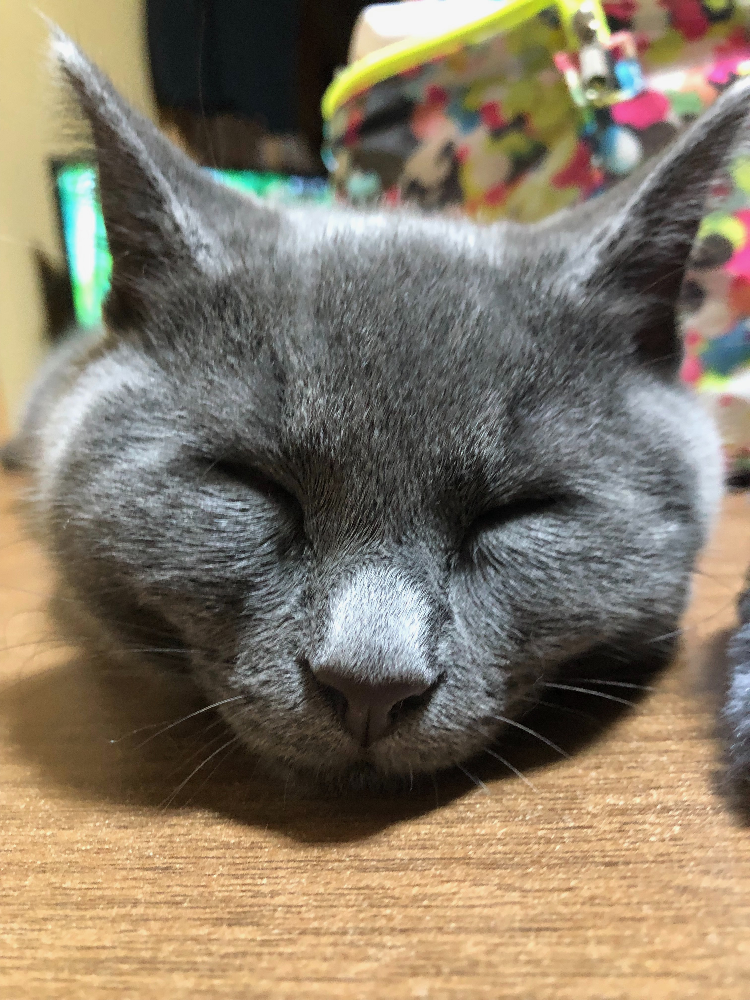
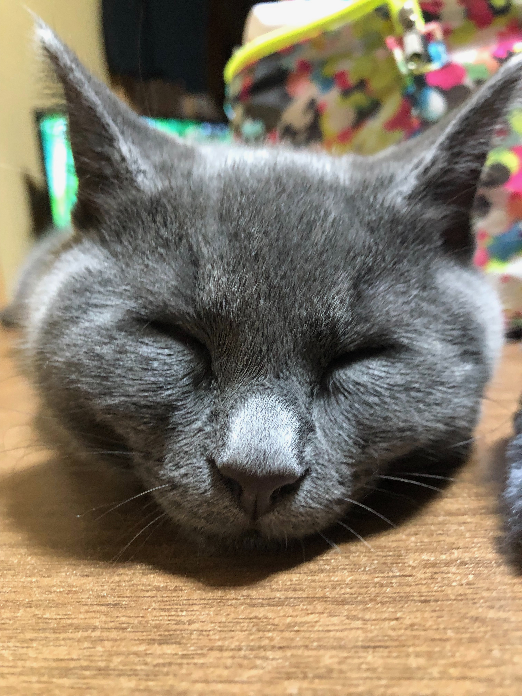

元気いっぱい子ねこです！
コンちゃんのプロフィール
カテゴリー：ペットの紹介
はじめまして、コンちゃんです。ようやく生まれて一年立ちました。元気いっぱいでお家の中でよくはしゃいでいましたね。目の色が特徴的で黄色くてとてもきれいです。
最近は、外にもちょくちょく行くようになったみたいでいっぱい食べて遊んで育ち盛りです。 これからも家庭を癒やして行って下さい。 元気に大きくなって長生きしてね！
コンちゃんのプロフィール
カテゴリー：ペットの紹介
はじめまして、コンちゃんです。ようやく生まれて一年立ちました。元気いっぱいでお家の中でよくはしゃいでいましたね。目の色が特徴的で黄色くてとてもきれいです。
最近は、外にもちょくちょく行くようになったみたいでいっぱい食べて遊んで育ち盛りです。 これからも家庭を癒やして行って下さい。 元気に大きくなって長生きしてね！